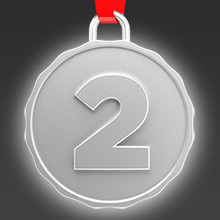

Отличный результат. Вы либо сценарист сериала Крис Картер, либо недавно пересматривали
все сезоны «Секретных материалов». До истины осталось всего несколько серий.
Хороший результат. Вы смотрели большую часть сезонов «Секретных материалов». Вы не ответили,
судя по всему, лишь на самые сложные вопросы. Для фанатиков сериала.

Неплохо, но явно «Секретные материалы» не ваш любимый сериал. Базовые вещи вам известны, но не
более того. Возможно, после последнего сезона, фильм захочется пересмотреть.
За истиной вы явно не гоняетесь и в инопланетян не верите. Поэтому и сериал «Секретные материалы»
если и смотрели, то невнимательно, да и редко. Возможно, стоит пересмотреть. Картина достойная.